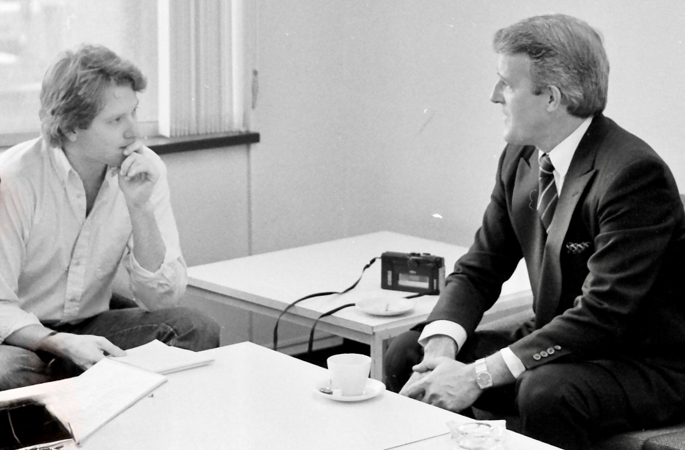

I AM A 1961 model, more than 90 per cent water, with various salts, electrolytes and industry-inspired inorgano chlorines mixed together and enclosed in a rubbery wrapping. In short, I am a human.
I live in Toronto. I attended the University of Toronto in the 1980s and while there began writing for the Globe and Mail, Canada's National Newspaper.
That started about two decades in print journalism, either staff or freelance, for publications such as Time, Fortune, the Independent (U.K.), Saturday Night Magazine, Financial Times of Canada, Old Farmers' Almanac, Toronto Star and others. I also produced television for Canada's CBC‑TV and contributed to some television and radio stations in Canada and the United States.
I have been lucky to interview some of the most unique people to grace the planet, including Paul Reichmann, Kenneth Thomson, Bill Gates, Pierre Trudeau and others, and I have worked with some great editors, who often let me investigate things uncommon or unexplored.
In the early 1990s, I felt another strong pull. I began thinking about 'needs' journalism instead of traditional news journalism, less on writing the stories that make headlines and more on giving people practical information they could actually use. My goal was to create resources that were easy to understand and helped people more effectively identify and meet their needs.
I built a database of articles focused on financial needs for a Canadian bank. But it was delivered through a dial-up service that was quickly made obsolete by the emergence of the web. The idea of the so-called Information Superhighway had long capivated me and I had a front row seat watching it emerge.
When the web started to take shape in the mid-1990s, I dove right in. I remained focused on needs-driven content. The shift to the Internet, this magical media with memory as I labelled it decades ago, created an alluring prospect for needs journalism compared to news journalism. Simply put, the former would natually possess a long shelf life. Additionally, needs education will typically lead to needs-fulfillment, or a transactional or distributive experience. It gave such a publishing model a compelling business case.
I further magnified the notion by booking the best available domain name for each area of need. In these very early days of the web there was no shortage of low-hanging fruit, which enabled me to assemble a broad portfolio of top-of-mind quality descriptive domain names. The hope was to cross-promote and cross-pollinate them all. The hope was to build demographics around needs instead of the Big Brother like data profiling of users that emerged.
It was a prescient notion. Alas it didn't quite come to pass. The reasons are myriad, from personal distractions to twists of fate. But the biggest was a lack of management skill. It took years for me to realize that sometimes the innovator who conjures an idea is often not the right person to manage it.
Now the rise of artificial intelligence has re-inspired some of my publishing ambitions. I have several sites in development with the help of AI. AI has also helped me in both the coding of this site and some its content creation. To the future we boldly go!